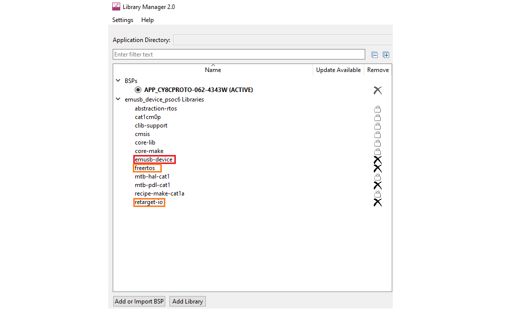
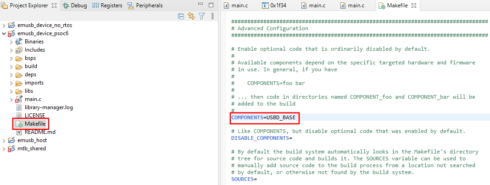
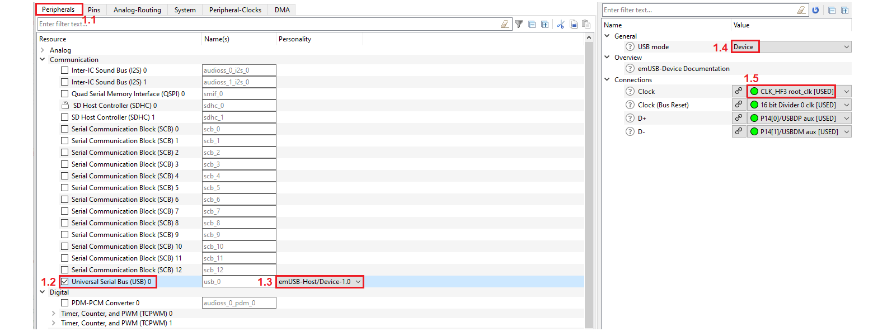
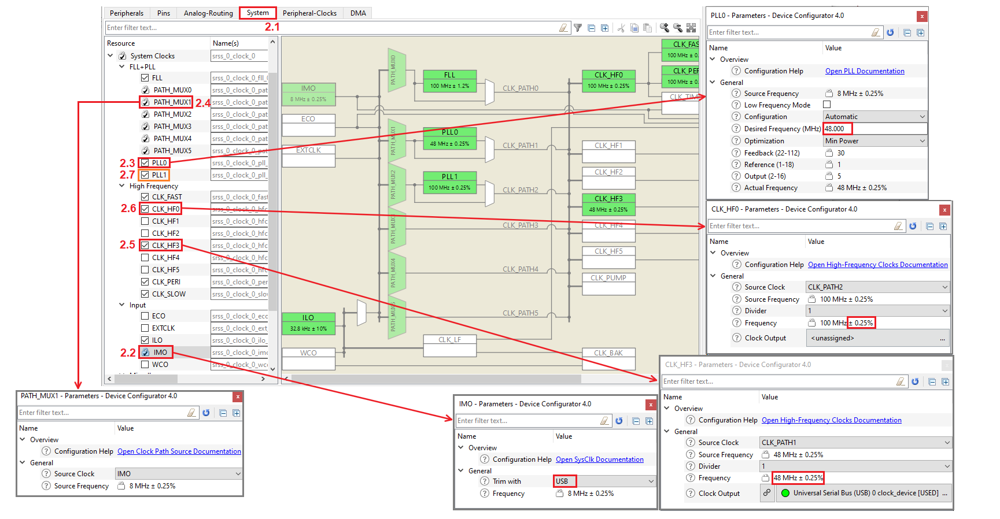
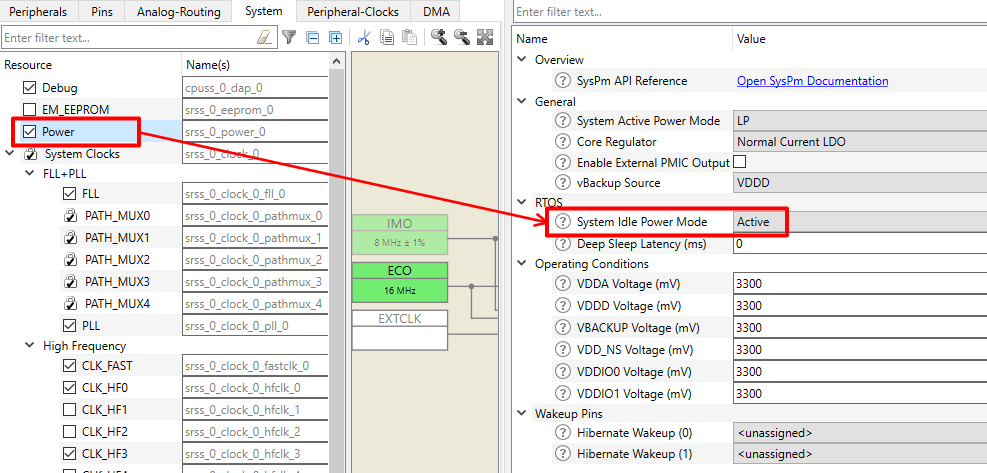

emUSB-Device enables easy integration of USB functionality into an embedded system.Multiple standard classes are provided that allow embedded systems to behave as standard USB devices and communicate with any host like Windows, Linux and Mac systems. Infineon has licensed emUSB-Device from SEGGER and offers it for free to its customers. This middleware library provides emUSB-Device in the form of pre-build libraries.
Features:
- High performance
- Can be used with or without an RTOS
- Easy to use
- Easy to port
- No custom USB host driver necessary
Supported USB Device Classes:
- Bulk communication
- Communication Device Class (CDC)
- Human Interface Device Class (HID)
- Mass Storage Device Class (MSD)
- Media Transfer Protocol Class (MTP)
- Printer Class
- Virtual Mass Storage Component (VirtualMSD)
- Vendor Specific Class (VSC)
Device families supported by the Middleware:
General Description
This manual provides only the basic concepts of emUSB-Device and integration specifics of the emUSB-Device into ModusToolbox flow. For a detail description of the emUSB-Device features, implementation, and APIs, refer to: SEGGER emUSB-Device User Guide & Reference Manual.
Quick Start is available in this API Reference Guide.
emUSB-Device consists of the following layers:
- The driver for hardware access
- The emUSB-Device core
- The USB class driver or the bulk communication component
emUSB-Device core and the USB class drivers are device-independent, while the driver for hardware access is applicable only for one device family. The driver is selected in the USBD_X_Config() function, the template of implementation of USBD_X_Config() is in the export/Config folder.
The drivers for emUSB-Device can support not all available features and may need to be configured in a special manners, refer to the: SEGGER emUSB-Device User Guide & Reference Manual Device driver specifics chapter.
Supported Drivers by the Device family
| Device family | Drivers | Pointer to the driver API structure |
| CAT1A | Cypress PSoC 6 driver | USB_Driver_Cypress_PSoC6 |
- Note
- For the USBD_AddDriver() function description, refer to the: SEGGER emUSB-Device User Guide & Reference Manual.
The emUSB-Device is provided in the form of pre-build libraries. The pre-build library is selected automatically based on configuration of Application project.
The emUSB-device has been already implemented the Target OS Interface for both RTOS and non-RTOS aware environments. The Target OS Interface for RTOS environment is implemented by FreeRTOS.
The hardware dependency files are present in export/Config directory, which consist of:
- One common file responsible for the debug message output
- Device-specific files for the hardware configuration of each supported device family
Also, the emUSB-Host/Device personality is present in the Device-configurator for simplify routine of configuration clocks and pins for USB IP block operation. The personality is a part of mtb-pdl-cat1 for CAT1A Devices Family.
Quick Start
To set up emUSB-Device for mouse and keyboard Human Interface Devices (HID), follow the below-described steps. These code snippets will move the mouse cursor left and right and print the "Hello world" message into the opened text editor. The current snippet is based on SEGGER sample application.
STEP 1: Add the emUSB-Device middleware.
- Launch the ModusToolbox Library Manager, click Add Library button and select the emUSB-Device. This step is required only if the ModusToolbox IDE is used. Otherwise, ensure that the emUSB-Device middleware is included in your project.

- Note
- To use the terminal output, add retarget-io middleware from the Library Manager.
-
Add the FreeRTOS middleware into the Library Manager if you want to use the FreeRTOS.
- Open Makefile of the project. Add USBD_BASE to the COMPONENTS section of the Makefile.

- Note
- Add FREERTOS to the COMPONENTS section of the Makefile if you want to use FreeRTOS.
STEP 2: Configure pins and clocks for emUSB-Device.
- Launch the ModusToolbox Device Configurator Tool and switch to the Peripherals tab (#1.1).
- Enable the USB personality under Communication (#1.2) and select the emUSB-Host/Device 1.0 personality (#1.3).
- Ensure that USB mode is Device (#1.4) and the Clock is connected to CLK_HF3 (#1.5).

Switch to the System tab (#2.1).
- Note
- The clocking system can be different between devices.
- Check the IMO clock is enabled (#2.2). Select Trim with the USB.
- If your device supports more than one PLL, select one. Enable the selected PLL and set a frequency of 48 MHz (#2.3).
- Note
- Select the enabled source clock with accuracy +/-0.25% into the PATH_MUX section of the selected PLL (#2.4).
- Select the CLK_HF3 USB clock (#2.5). Assign the source clock to the CLK_PATH connected to the configured previously PLL.
- Select the CLK_HF0 USB clock (#2.6). Assign the source clock to the CLK_PATH connected to the PLL with the clock accuracy +/-0.25%.
- Note
- You can use the PLL selected for CLK_HF3 or choose another one as it shown into the example (#2.7)
- Select File->Save to generate initialization code.

- Also if the Power personality is enabled the System Idle Power Mode must be have Active or CPU sleep.

STEP 3: Write the code in main.c.
- Include headers to get access to the emUSB drivers and retarget-io.
#include <ctype.h>
#include "cybsp.h"
#include "cy_retarget_io.h"
#include "USB.h"
#include "USB_HID.h"
- Note
- Include the following headers if you want to use FreeRTOS:
#include "FreeRTOS.h"
#include "task.h"
-
If you are working with CAT1A boards, include the following file:
- Add a structure prototype with the information about emUSB-Device.
static const USB_DEVICE_INFO device_info = {
0x8765,
0x1116,
"Vendor",
"HID mouse/keyboard sample",
"12345678"
};
- Create a structure prototype for the keyboard data.
typedef struct {
uint16_t key_code;
char key_char;
} code_to_desc_t;
- Initialize the table of the keyboard keys code and the keys descriptions.
static const code_to_desc_t key_code_to_string_table[] = {
{ 0x04, 'a'},
{ 0x05, 'b'},
{ 0x06, 'c'},
{ 0x07, 'd'},
{ 0x08, 'e'},
{ 0x09, 'f'},
{ 0x0A, 'g'},
{ 0x0B, 'h'},
{ 0x0C, 'i'},
{ 0x0D, 'j'},
{ 0x0E, 'k'},
{ 0x0F, 'l'},
{ 0x10, 'm'},
{ 0x11, 'n'},
{ 0x12, 'o'},
{ 0x13, 'p'},
{ 0x14, 'q'},
{ 0x15, 'r'},
{ 0x16, 's'},
{ 0x17, 't'},
{ 0x18, 'u'},
{ 0x19, 'v'},
{ 0x1A, 'w'},
{ 0x1B, 'x'},
{ 0x1C, 'y'},
{ 0x1D, 'z'},
{ 0x1E, '1'},
{ 0x1F, '2'},
{ 0x20, '3'},
{ 0x21, '4'},
{ 0x22, '5'},
{ 0x23, '6'},
{ 0x24, '7'},
{ 0x25, '8'},
{ 0x26, '9'},
{ 0x27, '0'},
{ 0x2C, ' '},
{ 0x37, '.'}
};
- Add the keyboard and mouse HID reports. These reports are generated according to HID spec and HID Usage Tables specification.
const uint8_t hid_report_keyboard[] =
{
USB_HID_GLOBAL_USAGE_PAGE + 1,
USB_HID_USAGE_PAGE_GENERIC_DESKTOP,
USB_HID_LOCAL_USAGE + 1,
USB_HID_USAGE_KEYBOARD,
USB_HID_MAIN_COLLECTION + 1,
USB_HID_COLLECTION_APPLICATION,
USB_HID_GLOBAL_USAGE_PAGE + 1,
7,
USB_HID_LOCAL_USAGE_MINIMUM + 1,
224,
USB_HID_LOCAL_USAGE_MAXIMUM + 1,
231,
USB_HID_GLOBAL_LOGICAL_MINIMUM + 1,
0,
USB_HID_GLOBAL_LOGICAL_MAXIMUM + 1,
1,
USB_HID_GLOBAL_REPORT_SIZE + 1,
1,
USB_HID_GLOBAL_REPORT_COUNT + 1,
8,
USB_HID_MAIN_INPUT + 1,
USB_HID_VARIABLE,
USB_HID_MAIN_INPUT + 1,
1,
USB_HID_LOCAL_USAGE_MINIMUM + 1,
0,
USB_HID_LOCAL_USAGE_MAXIMUM + 1,
101,
USB_HID_GLOBAL_LOGICAL_MINIMUM + 1,
0,
USB_HID_GLOBAL_LOGICAL_MAXIMUM + 1,
101,
USB_HID_GLOBAL_REPORT_SIZE + 1,
8,
USB_HID_GLOBAL_REPORT_COUNT + 1,
6,
USB_HID_MAIN_INPUT + 1,
0,
USB_HID_GLOBAL_USAGE_PAGE + 1,
USB_HID_USAGE_PAGE_LEDS,
USB_HID_LOCAL_USAGE_MINIMUM + 1,
1,
USB_HID_LOCAL_USAGE_MAXIMUM + 1,
5,
USB_HID_GLOBAL_LOGICAL_MINIMUM + 1,
0,
USB_HID_GLOBAL_LOGICAL_MAXIMUM + 1,
1,
USB_HID_GLOBAL_REPORT_SIZE + 1,
1,
USB_HID_GLOBAL_REPORT_COUNT + 1,
5,
USB_HID_MAIN_OUTPUT + 1,
2,
USB_HID_GLOBAL_REPORT_COUNT + 1,
3,
USB_HID_MAIN_OUTPUT + 1,
1,
USB_HID_MAIN_ENDCOLLECTION
};
const uint8_t hid_report_mouse[] =
{
USB_HID_GLOBAL_USAGE_PAGE + 1,
USB_HID_USAGE_PAGE_GENERIC_DESKTOP,
USB_HID_LOCAL_USAGE + 1,
USB_HID_USAGE_MOUSE,
USB_HID_MAIN_COLLECTION + 1,
USB_HID_COLLECTION_APPLICATION,
USB_HID_LOCAL_USAGE + 1,
USB_HID_USAGE_POINTER,
USB_HID_MAIN_COLLECTION + 1,
USB_HID_COLLECTION_PHYSICAL,
USB_HID_GLOBAL_USAGE_PAGE + 1,
USB_HID_USAGE_PAGE_BUTTON,
USB_HID_LOCAL_USAGE_MINIMUM + 1,
1,
USB_HID_LOCAL_USAGE_MAXIMUM + 1,
3,
USB_HID_GLOBAL_LOGICAL_MINIMUM + 1,
0,
USB_HID_GLOBAL_LOGICAL_MAXIMUM + 1,
1,
USB_HID_GLOBAL_REPORT_COUNT + 1,
3,
USB_HID_GLOBAL_REPORT_SIZE + 1,
1,
USB_HID_MAIN_INPUT + 1,
USB_HID_VARIABLE,
USB_HID_GLOBAL_REPORT_COUNT + 1,
1,
USB_HID_GLOBAL_REPORT_SIZE + 1,
5,
USB_HID_MAIN_INPUT + 1,
USB_HID_CONSTANT,
USB_HID_GLOBAL_USAGE_PAGE + 1,
USB_HID_USAGE_PAGE_GENERIC_DESKTOP,
USB_HID_LOCAL_USAGE + 1,
USB_HID_USAGE_X,
USB_HID_LOCAL_USAGE + 1,
USB_HID_USAGE_Y,
USB_HID_GLOBAL_LOGICAL_MINIMUM + 1,
(unsigned char)-127,
USB_HID_GLOBAL_LOGICAL_MAXIMUM + 1,
127,
USB_HID_GLOBAL_REPORT_SIZE + 1,
8,
USB_HID_GLOBAL_REPORT_COUNT + 1,
2,
USB_HID_MAIN_INPUT + 1,
USB_HID_VARIABLE | USB_HID_RELATIVE,
USB_HID_MAIN_ENDCOLLECTION,
USB_HID_MAIN_ENDCOLLECTION
};
- Add the functions for adding the keyboard and the mouse to the USB stack.
static USB_HID_HANDLE add_keyboard(void)
{
USB_HID_INIT_DATA init_data;
USB_ADD_EP_INFO ep_int_in;
USB_HID_HANDLE keyboard_handler;
memset(&init_data, 0, sizeof(init_data));
ep_int_in.Flags = 0;
ep_int_in.InDir = USB_DIR_IN;
ep_int_in.Interval = 64;
ep_int_in.MaxPacketSize = USB_HS_INT_MAX_PACKET_SIZE;
ep_int_in.TransferType = USB_TRANSFER_TYPE_INT;
init_data.EPIn = USBD_AddEPEx(&ep_int_in, NULL, 0);
init_data.pReport = hid_report_keyboard;
init_data.NumBytesReport = sizeof(hid_report_keyboard);
keyboard_handler = USBD_HID_Add(&init_data);
return keyboard_handler;
}
static USB_HID_HANDLE add_mouse(void)
{
USB_HID_INIT_DATA init_data;
USB_ADD_EP_INFO ep_int_in;
USB_HID_HANDLE mouse_handler;
memset(&init_data, 0, sizeof(init_data));
ep_int_in.Flags = 0;
ep_int_in.InDir = USB_DIR_IN;
ep_int_in.Interval = 64;
ep_int_in.MaxPacketSize = USB_HS_INT_MAX_PACKET_SIZE;
ep_int_in.TransferType = USB_TRANSFER_TYPE_INT;
init_data.EPIn = USBD_AddEPEx(&ep_int_in, NULL, 0);
init_data.pReport = hid_report_mouse;
init_data.NumBytesReport = sizeof(hid_report_mouse);
mouse_handler = USBD_HID_Add(&init_data);
return mouse_handler;
}
- Add the function for writing the keyboard data to the host.
static void keyboard_send_text(USB_HID_HANDLE keyboard_handler, const char* keyboard_text)
{
uint8_t char_arr[8];
char char_temp;
uint32_t i;
uint32_t j;
uint32_t key_code_to_string_table_size;
key_code_to_string_table_size = ((sizeof(key_code_to_string_table)) / (sizeof(key_code_to_string_table[0])));
memset(char_arr, 0, sizeof(char_arr));
for (i = 0; keyboard_text[i] != 0; i++)
{
if (keyboard_text[i] < 0x61 && keyboard_text[i] >= 0x41)
{
char_arr[0] = (1 << 1);
char_temp = tolower((int)keyboard_text[i]);
}
else
{
char_temp = keyboard_text[i];
}
for (j = 0; j < key_code_to_string_table_size; j++)
{
if (key_code_to_string_table[j].key_char == char_temp)
{
char_arr[2] = key_code_to_string_table[j].key_code;
}
}
USBD_HID_Write(keyboard_handler,
&char_arr[0],
8u,
0);
memset(char_arr, 0, sizeof(char_arr));
USBD_HID_Write(keyboard_handler,
&char_arr[0],
8u,
0);
USB_OS_Delay(50);
}
}
- Add the function for writing the mouse movements data to the host.
static void mouse_moves(USB_HID_HANDLE mouse_handler, int8_t mouse_move)
{
uint8_t move_arr[3];
memset(move_arr, 0, sizeof(move_arr));
move_arr[1] = (uint8_t)mouse_move;
USBD_HID_Write(mouse_handler,
&move_arr[0],
3u,
0);
USB_OS_Delay(1000);
}
- Create the main_task() function
void main_task(void* arg)
{
(void)arg;
int8_t mouse_move_left = -75;
int8_t mouse_move_right = 75;
const char* keyboard_text = "Hello world! ";
USB_HID_HANDLE mouse_handler;
USB_HID_HANDLE keyboard_handler;
USBD_Init();
keyboard_handler = add_keyboard();
mouse_handler = add_mouse();
USBD_SetDeviceInfo(&device_info);
USBD_Start();
while (1)
{
while ((USBD_GetState() & (USB_STAT_CONFIGURED | USB_STAT_SUSPENDED)) != USB_STAT_CONFIGURED)
{
}
mouse_moves(mouse_handler, mouse_move_left);
mouse_moves(mouse_handler, mouse_move_right);
keyboard_send_text(keyboard_handler, keyboard_text);
}
}
- Initialize retarget-io in main() to use the debug UART port.
- Note
- If you are working with CAT1A boards, use the following code to configure retarget_io:
cy_retarget_io_init(CYBSP_DEBUG_UART_TX, CYBSP_DEBUG_UART_RX, CY_RETARGET_IO_BAUDRATE);
Call main_task():
For non-RTOS environments:
Call the main_task() into the main() function.
For RTOS environments:
Create a FreeRTOS task with main_task() using xTaskCreate and start the task scheduler instead of calling main_task():
xTaskCreate(main_task, "main_task", 500U, NULL, configMAX_PRIORITIES - 6, NULL);
vTaskStartScheduler();
STEP 4: Check the emUSB-Device workability.
- Build and program your project.
- Connect the USB-Device connector to the PC host.
- Observe the mouse cursor move and print the "Hello world" message into the text editor.
Configuration Considerations
This section explains the details of the emUSB-Device configuration.
Hardware-dependent Configuration
The hardware resources (Pins, clocks, interrupts) required for USB must be configured before the start of USB operation before calling USBD_Init() or in USBD_X_Config(). USB pins (D+ and D-) and USB clocks can be configured by a personality in the Device Configurator or by PDL/HAL drivers. Interrupts must be configured in the USBD_X_Config() function. Also, USBD_X_EnableInterrupt() and USBD_X_DisableInterrupt() must be implemented when the USBD_OS_USE_USBD_X_INTERRUPT compile time option is enabled.
The implementation template of USBD_X_Config(), USBD_X_EnableInterrupt() and USBD_X_DisableInterrupt() is provided for each device category in the Config directory under COMPONENT_CATx. This template is automatically copied into your project when middleware is added to project. This template does not include the configuration of clock and pins required for USB operation.
For details on Hardware Dependent Configuration, refer to the - SEGGER emUSB-Device User Guide & Reference Manual.
USB Pins Configuration
The D+ and D- pins must be configured for USB operation. The emUSB-Host/Device personality in the Device Configurator allows for easy configuration of the pins. Otherwise, the pins can be configured manually by PDL APIs.
CAT1A Devices Family
The following snippet initializes GPIO pins for USB operation by mtb-pdl-cat1 APIs.
Cy_GPIO_Pin_FastInit(USBDP_PORT, USBDP_PIN, CY_GPIO_DM_ANALOG, 0U, USBDP_GPIO);
Cy_GPIO_Pin_FastInit(USBDM_PORT, USBDM_PIN, CY_GPIO_DM_ANALOG, 0U, USBDM_GPIO);
USB Clock Configuration
The USB 2.0 specification defines the required bit rate accuracy for the device in section 7.1.11. Ensure that the clock sources for USB meet the requirements.
The emUSB-Host/Device personality in the Device Configurator allows for easy configuration of the clocks for USB operation and also check if the clocks meet the requirements. Otherwise, the clocks can be configured manually by PDL/HAL APIs.
CAT1A Devices Family
The USB device requires two clocks for operation:
- Clock the main clock at 48 MHz. Typically, the main clock is CLK_HF3 output signal, but refer to the device datasheet to identify the clock source for USB for a specific device.
- Clock the Clock (Bus Reset) at 100 kHz. Typically, Clock (Bus Reset) is connected to CLK_PERI through peripheral clock dividers but refer to the device datasheet to identify the Clock (Bus Reset) source for USB for a specific device.
- Note
- Ensure that the clock sources for USB meet the requirements.
USB Interrupt Configuration
The interrupt is mandatory for the emUSB-Device Middleware operation. The interrupt priority selection is a part of Application level - the interrupt priority selected in the template files is not suitable for real project. For USB recommended setting the interrupt priority as high as possible.
CAT1A Devices Family
emUSB-Device uses only one interrupt source from the three available in the IP USB block - usb_interrupt_med_IRQn. The emUSB-Device code can be executed on CM4 and CM0+ cores. For CM0+, the interrupt source of the USB IP block can be connected to one of CM0+ IRQs. Refer to the device datasheet and SysInt (System Interrupt) Driver documentation to find the available IRQs for CM0+.
The following code snippet shows the interrupt configuration for both CM4 and CM0+ cores.
- Note
- The number of CM0+ interrupt vectors is different for different devices, so, this code snippet may not be suitable for all devices.
#if (COMPONENT_CM0P)
#define USBD_INTERRUPT_NUM (NvicMux7_IRQn)
#else
#define USBD_INTERRUPT_NUM (usb_interrupt_med_IRQn)
#endif
#define USBD_ISR_PRIO (3U)
static void enable_isr(USB_ISR_HANDLER * pfISRHandler)
{
cy_rslt_t result;
result = cyhal_system_set_isr(USBD_INTERRUPT_NUM, usb_interrupt_med_IRQn, USBD_ISR_PRIO, pfISRHandler);
CY_ASSERT(CY_RSLT_SUCCESS == result);
(void) result;
NVIC_EnableIRQ(USBD_INTERRUPT_NUM);
}
Debug Message Output
The debug builds of emUSB-Device allow using the debug message outputs. The template implementation of the message output functions is in export/Config/usbd_config_io.c file. Copy this template manually into your project and modify if required. By default, retarget-io is used for the message output, but message outputs can be redefined to any suitable output way.
For details on Hardware Debug Message Output, refer to the - SEGGER emUSB-Device User Guide & Reference Manual Debugging chapter.
- Note
- The retarget-io middleware must be configured outside of the emUSB-Device middleware for the message output. Refer to the retarget-io Quick Start.
-
The retarget-io does not send the debug message from the interrupt in RTOS aware environments.
Low Power Support
The suspended device must limit the current consumption from VBUS to 0.5 mA. Therefore, put the device into low-power mode to consume less current. To prepare emUSB-Device for entering Low-power mode and restore after, refer to the - SEGGER emUSB-Device User Guide & Reference Manual Low power mode chapter.
- Note
- Preparing the USB for Low-power mode and detecting the Suspend condition are significantly different among devices. Pay attention to the following explanation for required devices.
CAT1A Devices Family
The two specific functions are provided for detecting Suspend condition and restoring emUSB-Device after Deep Sleep - USB_DRIVER_Cypress_PSoC6_SysTick() and USB_DRIVER_Cypress_PSoC6_Resume(). The application must call USB_DRIVER_Cypress_PSoC6_SysTick() every millisecond in order to get suspend events handled. The USB_DRIVER_Cypress_PSoC6_Resume() function must be called after waking up from Deep Sleep Low-power mode. For more details about these functions refer to the SEGGER emUSB-Device User Guide & Reference Manual PSoC6 driver chapter.
- Note
- After waking up from Deep Sleep, USBD_GetState() can returns the Suspend status for some time. Wait up to 10 milliseconds and then check the USB status with USBD_GetState() because USB_DRIVER_Cypress_PSoC6_SysTick() requires some time for identifying the Resume condition.
The USB IP block is disabled during Deep Sleep Low-power mode. So, configure the falling edge interrupt on the D+ pin (before entering Deep Sleep) to exit Low-power mode when the Host drivers resume. The interrupt on the D+ pin wakes up the device from Low-power mode when the Host drivers resume.
- Note
- The Remote Wake up functionality is not supported by the PSoC 6 driver.
Picking an emUSB-Device Library Variant
The Middleware provides emUSB-Device as pre-build libraries. The pre-build libraries are selected automatically based on configurations of Makefile configurations. The table below shows the availability of the configuration options.
| Configuration | Options | Make Variable |
| Device family | CAT1A | DEVICE_COMPONENTS |
| Build configuration | Debug, Release | CONFIG |
| Core | CM0P, CM4 | CORE |
| Floating point | hardfp, softfp | VFP_SELECT |
| Toolchain | GCC_ARM, IAR, ARM | TOOLCHAIN |
- Note
- Typically, the device family and core are selected in BSP Makefile.
-
CM0P supports only softfp.
The header file USBD_ConfDefaults.h under the USBD directory contains common configuration used in the libraries generation. Similarly, USBD_Conf.h under each COMPONENT_<Device family>/CONFIG_< Build configuration> directory contains configuration specific to the set of library variants.
Using emUSB-Device in an RTOS Environment
The emUSB-device has been already implemented the Target OS Interface for both RTOS and non-RTOS aware environments. Selecting the OS layer implementation is automatic based on the RTOS_AWARE component. To inform the emUSB-Device that an RTOS environment is being used, set the RTOS_AWARE component (COMPONENTS+=RTOS_AWARE).
For the RTOS environment, the OS layer uses the FreeRTOS library.
Specific implementation of Target OS Interface:
-
USB_OS_DecRI() and USB_OS_IncDI() have only alternate implementation because the USBD_OS_USE_USBD_X_INTERRUPT compile time option is enabled. Alternate implementation is more effective compared to the standard one because it allows disabling/enabling USB interrupts only before entering/exiting the critical section for emUSB-device.
-
For non-RTOS environments, USB_OS_GetTickCnt() configures one instance of the timer by Timer (Timer/Counter) Driver of HAL library for returning the current system time in milliseconds. The timer is started by initializing the emUSB-Device middleware. USB_OS_GetTickCnt() own implementation can be provided due to:
-
The optimization of handling the ISR routine (the timer generates an interrupt every 1 millisecond);
-
Providing more reliable implementation (the timer value reloads every 49 days, 17 hours, 2 mins, 47.296 seconds);
-
The optimization of the HW resources usage (one instance of the TCPWM counter or similar HW resources, which can be used by
Timer (Timer/Counter) Driver);
To do that, set the USBD_NORTOS_TICKCNT_ENABLE macro value to zero in Makefile file.
- Note
- For CAT1A and devices: The own implementation of USB_OS_GetTickCnt() must be provided if the application uses the transit into Deep Sleep or Hibernate low-power modes.
-
For Free-RTOS, USB tasks priority must be lower than the priority of RTOS daemon tasks (also known as timer service tasks). The RTOS daemon task priority is defined in configTIMER_TASK_PRIORITY.
For details on Target OS Interface, refer to the - SEGGER emUSB-Device User Guide & Reference Manual Target OS Interface chapter.
emUSB-Device Package Structure
The Middleware structure:
- export/Config: Contains sample configuration files for hardware-specific configuration.
- OS: Contains the OS layer implementation.
- USBD: Contains a set of pre-build emUSB-Device libraries for different configurations of user applications (Device family, Build configuration, Core, Floating point, Toolchain), and a set of header files.
- docs: Contains the API Reference Guide, SEGGER-provided emUSB-Device User Guide & Reference Manual and other supporting documentation.
Changelog
Note that the emUSB-Device Middleware by Infineon and emUSB-Device stack by Segger have different versions
| Version | Changes | Reason for Change |
| 1.0.1 | Updating the LICENSE file | |
| 1.0.0 | Initial release of emUSB-Device stack 3.52.2 | |